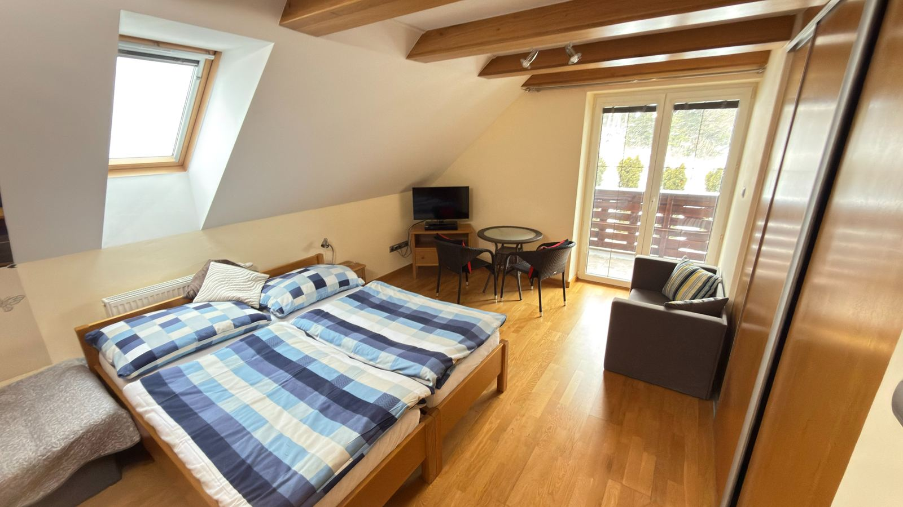
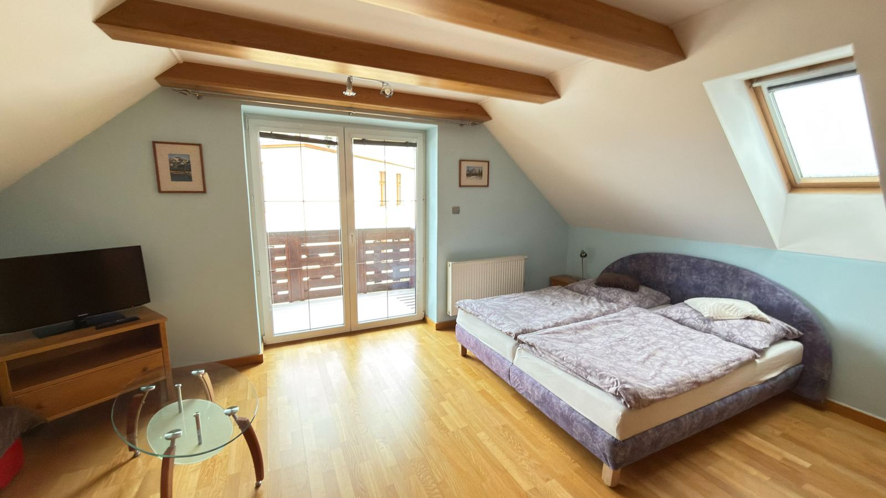
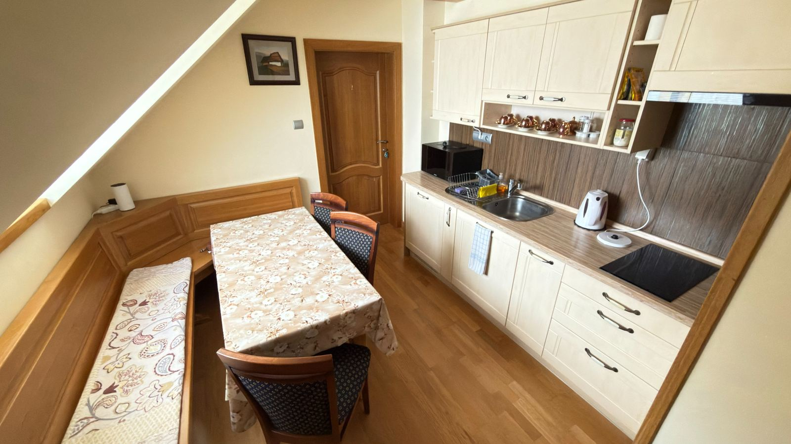
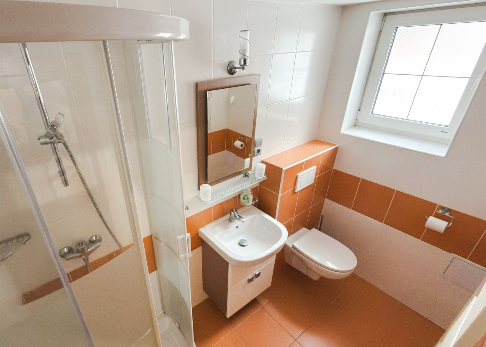

Sokol nad dolinou
Falco, sokol, bdie nad dolinou zhora. Vila Falco je vaša vyhliadka vo Vysokých Tatrách: útulná základňa, kde máte hory priamo za dverami.
Horný Smokovec, Vysoké Tatry
Príjemné a pokojné súkromné ubytovanie v srdci Vysokých Tatier. Ideálne pre rodiny, páry aj turistov hľadajúcich ticho, pohodlie a výbornú polohu.

Uprostred prírody Vysokých Tatier, ďaleko od hluku mesta. Ideálne miesto pre relaxáciu a oddych.
Celé poschodie s vlastným vstupom zabezpečuje súkromie a pohodlie pre všetkých hostí.
Bezplatné parkovanie priamo pri dome pre maximálne pohodlie vašej dovolenky.
Výborná dostupnosť k najkrajším turistickým trasám a lyžiarskym strediskám Tatier.
Vila Falco sa nachádza v malebnej časti Horného Smokovca, kde sa spája tatranská príroda s pohodlím moderného ubytovania. Ponúkame samostatné poschodie, ktoré môžete prenajať ako celok alebo formou jednotlivých izieb.
Naše ubytovanie je ideálne pre rodiny s deťmi, páry hľadajúce romantický únik do prírody, alebo skupiny priateľov túžiacich po aktívnom pobyte v horách.

Falco, sokol, bdie nad dolinou zhora. Vila Falco je vaša vyhliadka vo Vysokých Tatrách: útulná základňa, kde máte hory priamo za dverami.
Kombinácia ideálnej polohy, moderného vybavenia a osobného prístupu robí z nášho ubytovania perfektné miesto pre vašu dovolenku v Tatrách. Či už plánujete letné túry alebo zimnú lyžovačku, Vila Falco vám poskytne pohodlie a súkromie, ktoré potrebujete.



Od 30 € za osobu a noc, deti od 2 do 15 rokov so zľavou 50 %.